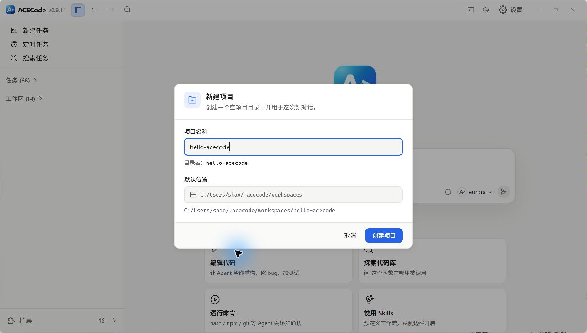
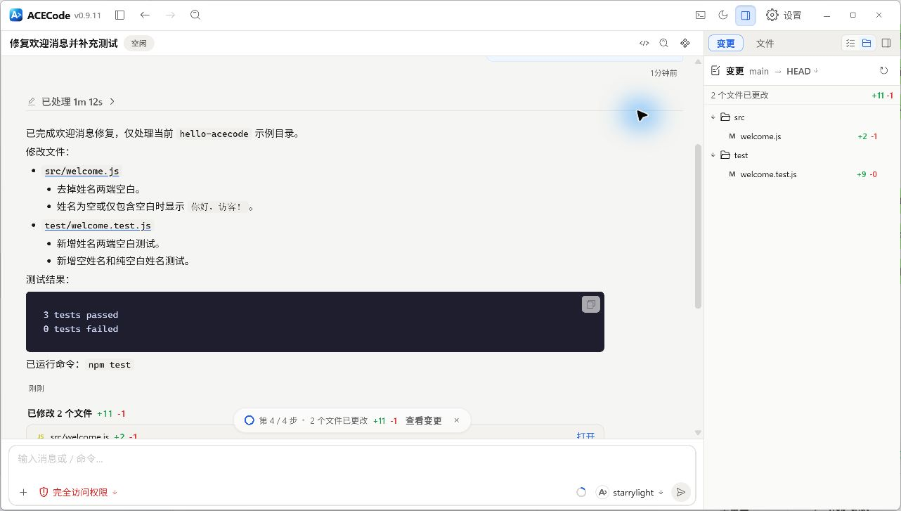

实战示例
用四个完整流程练习把目标、范围、执行和验证连在一起。示例提示可直接修改后使用。
新项目实战
- 从新任务的工作区选择入口使用新建项目，填写名称并检查默认位置与实际目录名。
- 创建后确认该目录已成为当前任务工作区，选择模型与权限。
- 先描述目标用户、功能范围、技术约束和如何验收。
- 让 ACECode 检查空目录、给出简短实现步骤，再逐步创建文件。
- 运行项目的构建或启动命令，检查实际页面或输出。
新建项目创建的是空目录，不会自动选定技术栈或生成完整应用。名称不符合系统规则时，界面会展示规范化后的目录名；保存前检查路径预览。
发送前按实际需求调整
在当前空项目中创建一个本地待办网页，使用普通 HTML、CSS、JavaScript，不依赖服务端。需要新增、完成和删除待办，并在刷新后保留数据。先说明文件结构，完成后验证这四个操作，并告诉我如何打开。{kind=link}

{kind=link}

排查问题与修复缺陷
先提供复现步骤、预期结果、实际错误与相关日志。通过 @ 或文件预览引用入口文件，要求先追踪真实调用链。原因明确后再给出修改范围，修复后重复同一复现步骤。
分阶段诊断与修复
登录成功后第一次打开设置页会出现空白，刷新后恢复。请先检查路由和初始化请求，结合我附上的错误日志定位原因，不要先改代码。确认原因后修复最小范围，并用原复现步骤验证。如果任务在模型连接前就失败，先按模型连接排错恢复请求能力。排查应用代码与排查 ACECode 自身连接是不同层面，不要混用错误证据。
实现功能与重构代码
先说明用户触发动作及修改后的行为，列出兼容要求。需要隔离实验时，在新任务首次发送前启用 Git 工作树并选择基准分支。让 ACECode 阅读现有实现与测试，然后完成修改和对应验证。
功能请求示例
给现有任务列表增加按名称筛选。输入时更新列表，清空后恢复全部任务，保留当前排序和置顶逻辑。先阅读相关组件与测试，复用现有样式，完成后验证中文、空白输入和无匹配结果。重构时明确希望保持哪些公开行为、接口和数据格式。不要以文件变少或函数变短作为唯一验收条件。完成后在差异面板检查范围，并确认已有行为仍通过验证。
审查代码变更
打开变更面板，选择要比较的基准并检查涉及的文件。告诉 ACECode 审查对象、关注的风险和是否允许直接修改；如果仅需审查，在请求中明确写出。
main 应替换为仓库真实基准分支
审查当前分支相对 main 的差异，先不要修改。优先检查可能造成数据丢失、错误状态和兼容性回归的问题。每项发现注明文件位置、触发条件、实际影响和建议验证方式；没有证据的猜测不要列为缺陷。审查结果应能对应具体代码与行为。确认修复建议后再启动修改任务，并在结束时重新查看差异。变更面板可能包含你或其他任务产生的修改，判断范围时不要把所有差异都归因于这一次任务。